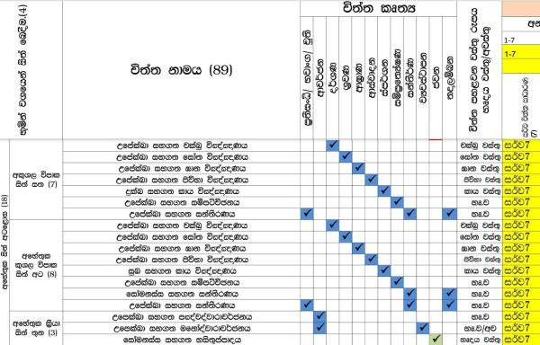
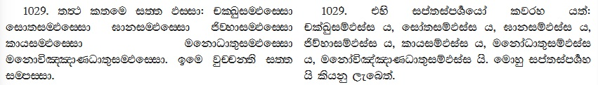

නමෝ තස්ස භගවතො අරහතො සම්මා සම්බුද්ධස්ස ... !!!
සම්මුතියේදී "මම", "මගේ" යනු නොයෙක් ආකාරයෙන් භාවිතා වන වචන දෙකකි. එහිදී බහුල වශයෙන් "මම" යනුවෙන් භාවිතා වන්නේ නොයෙක් විට ක්රියාවක් මුලට ගැනෙන දෙයකි (කාය, වචී, මනෝ කර්ම). "මගේ" යනුවෙන් භාවිතා වනුයෙ බහුල වශයෙන් සම්මුතියේදී අයිතියක් දැක්වීමට යොදාගන්නා දෙයකි. එය නොයෙකුත් භාෂාවන්හි ඔව්නොවුන්ට අවේනික පරිදි හැදින්වීමට ප්රඥප්තින් සත්වයා විසින් යොදා ගනු ලැබේ. නිරන්තරයෙන්ම ආයාසයකින් තොරව උපදින්නාවූ ධර්මතාවයක් වන "මම", "මගේ" යන්නාවූ හැගීමෙන් තොරව සත්වයාට එදිනෙදා ජීවත් විය නොහැකි වේ. නමුත් තවත් කෙනෙකුට "මම" අම්මා, තාත්තා, පුතා, දුව, නැන්දා, මාමා ලෙසින් සම්මුති නැ කමකින්ද වසනා, ප්රජිත, උදිත ආදි නම් වලින් යනාදී නොයෙක් ආකාරයෙන් වෙනස් වන ස්වභාවයක් පවතී. එලෙසම "මගේ" ලෙස ගන්නා යම් දෙයක් සම්මුතියේදී "ඔහුගේ, ඇයගේ" ආදී ලෙසින් වෙනස් වීමක්ද පවතී. එලෙසම මේ සිතුවිල්ලේ ප්රබල වශයෙන් ක්රියාකරන්නෙකු සිටින අතර එය "මගේ ආත්මය" ලෙස සම්මුතියේදී හඳුනාගෙන ඇත. මෙලෙසින් සත්ය වශයෙන් පවතී යනුවෙන් ගන්නාවූ සවිඥානික හා අවිඥානික අරමුණු සමූහයක් (ස්කන්ධ පංචකය) මම, මගේ, මගේ ආත්මය කරගැනීම සක්කාය දෘෂ්ටිය (පංච උපාදානස්කන්ධය කෙරෙහි මමය, මාගේය, මාගේ ආත්මයය, සත්වයෙක්ය, පුද්ගලයෙක්ය යැයි වරදවා දැකීම වේ) ලෙසින් භාග්යවතුන් වහන්සේ ආර්ය සත්ය දේශනාව තුළින් අවබෝධ කරගනු සඳහා දේශනා කරන ලදී.
මෙහිදී විමසා බැලිය යුතු කරුණ නම් මම යනු කව්ද යන්න වේ. එලෙසම අරමුණක් කෙසේ මම, මගේ, මගේ ආත්මය බවට පත්වන්නේද යන්න විමසීම කල යුතුය. කර්මය, කර්ම නිමිත්ත, ගති නිමිත්ත යන්නාවූ අරමුණු වලින් එක් අරමුණක් ගෙන චුති වන්නාවූ සත්වයා වර්තමාන භවයේ ප්රතිසන්ධි වනවාත් සමගම කර්ම ශක්තියෙන් මවගේ හා පියාගේ ධාතු කලලය තුළට ප්රතිසන්ධි විඤ්ඤාණයාගේ බසගැනීමත් සමගම ආයතන/භූමින්/ඉන්ද්රියන් හයක් සකස් වීම සිදුවේ. ඉන්පසු ධාතු කලලය ආහාර ප්රත්යයෙන් (මව කන බොන දෑ) වැඩීමත් සමගම ප්රතිසන්ධියේදී සකස් වූ භූමින්/ප්රසාද/ආයතන ඒ ඒ ස්ථානයන්හි සුදුසු පරිදි පිහිටීම සිදුවේ (සත්ව ස්වරූප අනුව වෙනස් වේ) මෙමගින් දැනගතයුතු කරුණු නම් එසේ සකස් වූ
01. ආයතන/භූමින් (කර්මජ කය) සකස් වීම කර්ම විපාකයකට අයත් කෘත්යක් බව හා
02. වැඩීම් වශයෙන් සකස් වූ සත්ව ශරීරය (කරජ කය) ආහාරය හේතු කොට ගෙන සකස් වීම.
යන කරුණු දෙකයි. එලෙසින් එහි ඇත්තේ හේතුවක ඵලයකි. එනම් අප බඹයක් වූ ශරීරයේ අරමුණු සකස් වීම සඳහා ඇත්තාවූ භූමින්/ආයතන වන චක්ඛු ප්රසාදය, සෝත ප්රසාදය, ඝාණ ප්රසාදය, ජිව්හා ප්රසාදය, කාය ප්රසාදය, හදය වස්තු ප්රසාදය යන්නාවූ ප්රසාද හය කර්ම ශක්තියේ ප්රතිඵලයකි. එහිදී කර්මය විසින් සකස් කල භූමින් හයක් (කර්මජ කය) මගේ ඇස, මගේ කන, මගේ නාසය යනුවෙන් අල්ලාගෙන සිටීම ගැන විමසිය යුතු කරුණකි. එසේම ආහාර ප්රත්යයෙන් සකස් වන කරජ කය කන බොන ආහාරයට අයත් වූ දෙයක් වන අතර සත්වයා එයද මගේ කියා සිතා සිටීම විමසිය යුතු කරුණකි.
තවද මූලික කෘත්ය වන පෙනීම, ඇසීම, දැනීම, දැනගැනීම (හිතීම) (දිට්ඨ, සුත, මුත, විඤ්ඤාත) යන කරුණු/කෘත්යයන් විමසීමේදී එහි ඇත්තේ බහිද්ධ අරමුණු, අජ්ජතික ආයතනයන්, මූල විඤ්ඤාණ යන්නාවූ හේතු තිත්තන් සංගති වශයෙන් යෙදී ඒ සමගම අවම නාම ධර්මතා 7 ක එකතුවෙන් අනාත්මීයව සකස් වන්නාවූ කෘත්යක් වේ (ද්විපංච විඤ්ඤාණ) (චිත්ත චෛතසික වගුව බලන්න). එලෙසින් ධර්මතා 18 සමග පහත ආකාරයෙන් විමසා බැලීමේදී ඒ ඒ අහේතුකව සකස් වන්නාවූ සිත් මූලිකව (මුල් උපත) සකස් වන ආකාරය එනම් ද්විපංච විඤ්ඤාණයන් කුසලාකුසල වශයෙන් සකස් වන ආකාරය විමසා බැලිය හැකිවේ. එලෙසම මෙහිදී ප්රධාන වශයෙන් දැනගත යුතු කරුණ නම් විඤ්ඤාණයේ කෘත්ය දැනගැනීම පමණක් වන බවය එනම් දැනගැනීම නම් විඤ්ඤාණයයි.
| බාහිර අරමුණු | ආයතන/භූමිය/ ඉන්ද්රියන් | භවාංග ප්රත්ය | ඵලය |
|---|---|---|---|
| රූප | ඇස/චක්ඛු | මූල චිත්තය/විඤ්ඤාණය | චක්ඛු විඤ්ඤාණය (ස්කන්ධ 5 කි) |
| ශබ්ද | කන/සෝත | මූල චිත්තය/විඤ්ඤාණය | සෝත විඤ්ඤාණය (ස්කන්ධ 5 කි) |
| ගන්ධ | නාසය/ඝාන | මූල චිත්තය/විඤ්ඤාණය | ඝාන විඤ්ඤාණය (ස්කන්ධ 5 කි) |
| රස | දිව/ජිව්හා | මූල චිත්තය/විඤ්ඤාණය | ජිව්හා විඤ්ඤාණය (ස්කන්ධ 5 කි) |
| පොට්ඨබ්බ | කය/කාය | මූල චිත්තය/විඤ්ඤාණය | කාය විඤ්ඤාණය (ස්කන්ධ 5 කි) |
| ධම්ම | මන/මනස (හදය වස්තු ප්රසාදය) | මූල චිත්තය/විඤ්ඤාණය | මනෝ විඤ්ඤාණය (ස්කන්ධ 5 කි) |
| හේතු | |||

ඉහත සඳහන් පරිදි මූලික කෘත්ය විස්තාර කර බැලීමේදී එනම් පෙනීම, ඇසීම, දැනීම, දැනගැනීම (හිතීම) (දිට්ඨ, සුත, මුත, විඤ්ඤාත) යන කෘත්ය සකස් වන්නේ කෙසේද යන්න විමසා බැලීමේදී
- පෙනීම යනු බහිද්ද වශයෙන් වර්ණ රූපය, අජ්ජතික වශයෙන් චක්ඛු ප්රසාද රූපය, මූල විඤ්ඤාණය හා නාම ධර්මතා (සබ්බ චිත්ත සාධාරණ චෛතසික: ඵස්ස, වේදනා, සඤ්ඤා, චේතනා, ඒකග්ගතා, ජීවිතින්ද්රිය, මනසිකාර) හතක කෘත්යක් වේ. එලෙස ඵලය ලෙස ස්කන්ධ පංචයක සකස් වීම සිදුවේ. එනම් චක්ඛු විඤ්ඤාණයයි.
- ඇසීම යනු බහිද්ද වශයෙන් ශබ්ද රූපය, අජ්ජතික වශයෙන් සෝත ප්රසාද රූපය, මූල විඤ්ඤාණය හා නාම ධර්මතා (සබ්බ චිත්ත සාධාරණ චෛතසික: ඵස්ස, වේදනා, සඤ්ඤා, චේතනා, ඒකග්ගතා, ජීවිතින්ද්රිය, මනසිකාර) හතක කෘත්යක් වේ. එලෙස ඵලය ලෙස ස්කන්ධ පංචයක සකස් වීම සිදුවේ. එනම් සෝත විඤ්ඤාණයයි.
- දැනීම යනු බහිද්ද වශයෙන් පිළිවෙලින් ගන්ධ, රස, පොට්ඨබ්බ (පඨවි, තේජෝ, වායෝ) රූපයන්, අජ්ජතික වශයෙන් ඝාණ, ජිවහා, කාය ප්රසාද රූපය, මූල විඤ්ඤාණය හා නාම ධර්මතා (සබ්බ චිත්ත සාධාරණ චෛතසික: ඵස්ස, වේදනා, සඤ්ඤා, චේතනා, ඒකග්ගතා, ජීවිතින්ද්රිය, මනසිකාර) හතක කෘත්යක් වේ. එලෙස ඵලය ලෙස ස්කන්ධ පංචයක සකස් වීම සිදුවේ. එනම් පිළිවෙලින් ඝාන විඤ්ඤාණය, ජිවහා විඤ්ඤාණය, කාය විඤ්ඤාණය ලෙසිනි.
- දැනගැනීම යනු ධම්මාරම්මණ, මනෝද්වාරය හා නාම ධර්මතා (සබ්බ චිත්ත සාධාරණ චෛතසික: ඵස්ස, වේදනා, සඤ්ඤා, චේතනා, ඒකග්ගතා, ජීවිතින්ද්රිය, මනසිකාර) හතක කෘත්යක් වේ. එලෙස ඵලය ලෙස ස්කන්ධ පංචයක සකස් වීම සිදුවේ. එනම් මනෝ විඤ්ඤාණයයි.
මෙහිදී ඇතිවිය හැකි තවත් ප්රශනයක් නම් හේතුවක ඵලයක් ලෙස ස්කන්ධ පංචකයන් සකස් වන්නේ නම් මෙහි ද්විපංච විඤ්ඤාණ අහේතුක වන්නේ කෙසේද යන්නවේ. මෙහිදී අහේතුක වශයෙන් සදහන් කර ඇත්තේ හේතු නැති බව නොවන අතර විමසීම සඳහා (මුල් උපතෙන් ඔබ්බට) හේතු වශයෙන් ස්කන්ධ පංචක පංච උපාදානස්කන්ධ මට්ටමට වැඩීමට (නිබ්බන්ති, අභිනිබ්බන්ති වශයෙන්) යෙදෙන්නාවූ හේතු වන්නාවූ ලෝභ, ද්වේශ, මෝහාදී අකුසල ධර්මතාද අලෝභ, අද්වේශ, අමෝහ කුසල ධර්මතා නොයෙදී මුල් උපත සකස් වන බවය. එහිදී මුල් උපත විපාක මට්ටමින් දැනගත යුතුය එනම් විපාකයක් වශයෙන් සකස් වූ භූමින් හයට සහ භවාංග සිත සමග භාහිර අරම්මනයන් යෙදීම වශයෙන් ස්කන්ධ පන්චකයන් සකස් වීමට කිසි උත්සහයක් (තර්කයක්/මඤ්ඤනාවක්/විපල්ලාසයක්) අවශ්ය නොවේ. නමුත් සත්වයාට එම ආරම්මණයන් කෙසේ සකස් වනවාද යන්න අවබෝධය නැති බැවින් එනම් එය කුමන කුසලාකුසල කර්මයක විපාකයක්ද යන්න හඳුනා ගැනීමට නොහැකි බව දැනගත යුතුය.
මෙලෙසින් වර්තමාන මොහොතේ හේතු වශයෙන් යෙදෙන්නාවූ අරමුණ, එනම්
| 01. රූපාරම්මණ - රූප රූප | - ඇස (වක්ඛු) | (දේශනා අංක 10) |
| 02. ශබ්ධාරම්මණ - ශබ්ධ | - කණ (සෝත) | |
| 03. ගන්ධාරම්මණ - ගන්ධ | - නාසය (ඝාණ) | |
| 04. රසාරම්මණ - රස | - දිව (ජිව්හා) | |
| 05. පොට්ඨාබ්බාරම්මණ - පොට්ඨබ්බ (පඨවි, තේජෝ, වායෝ) | - කය (කාය) | |
| 06. ධම්මාරම්මණ - ධම්ම | - මන | (දේශනා අංක 9) |
වශයෙන් ගෝචර රූප හතක් සහ ධම්මාරම්මණ (දේශනා අංක 9) ඒ ඒ භූමින් සමග මූල විඤ්ඤාණය සමග තින්නන් සංගති වශයෙන් යෙදී සකස් වන්නාවූ ඵල නම් ස්කන්ධ පංචකය වේ. එලෙසින් වර්තමාන මොහොතට ජාතියක්/සමුදයක් ඇත්නම් එය ස්කන්ධ පන්චකයක් වන අතර ඇසුරු වීමක් සිදුවන්නේ රූප, වේදනා, සංඥා, සංස්කාර ඵල ධර්මතාවයන් විඤ්ඤාණයෙන් දැනගැනීමක් වේ. මෙලෙසින් සකස් වන්නාවූ පෙනීම, ඇසීම, දැනීම, දැනගැනීම (හිතීම) (දිට්ඨ, සුත, මුත, විඤ්ඤාත) නැවත මනෝමූලිකව සිතමින් ඒහි ඇත්තාවූ විදීම ස්වභාවයන් විස්තර කිරීමට යාමෙන් සත්වයා දුක/ලෝකය/මාරයා සකස් කරගැනීම සත්ව ස්වභාවය වේ. සම්මුති සත්යයේදී මෙලෙස ඒ ඒ ආරම්මණයන් විවිධාකාරයෙන් විස්තර කරත් එහි ස්වාභාවය විස්තර කල නොහැකි අවබෝධ කරගත යුතු ධර්මතා ලෙසින් පවතී. එනම් අරමුණු වශයෙන් යෙදෙන්නාවූ ධර්මතා වල සත්ය ස්වභාවය නම් ඒවා ශක්ති සහ ක්රියාවන් වශයෙන් අවකාශයේ පැවතිමයි (පරමාර්ථ ධර්මතා ස්වභාවය). මුල් උපතකට මෙසේ නැවත සිතමින් සකස් කරගන්නා මනෝමූලික භාවය නිසා කාය, වචී, මනෝ කර්ම කිරීමක් සත්වයා සිදු කරයි එයට හේතුව වශයෙන් දී ඇත්තේ "තණ්හාව" වේ. එනම් මුල් උපතේ ඇත්තාවූ සත්ය ස්වභාවය වෙනස් කිරීම සිදුවන්නේ තණ්හාව මූලික කරගෙනය. මෙහිදී තේරුම් ගත යුතු තවත් කරුණක් නම් එසේ යම් අරමුණක් මනෝ මූලික භාවයට ගෙන සම්මුති ස්වරූපයක් ගන්නා අවස්ථාවෙදී හේතු වශයෙන් යෙදුන අරමුණ අවකාශයේ සත්ය වශයෙන් නොතිබීමයි. එනම් පරමාර්ථ වශයෙන් සකස් වන්නාවූ එම ක්රියාවන්ගේ ආයුෂය ගෙවී ගිය පසු ඒ අරමුණ භාහිර ඇතැයි සිතා සත්වයා සම්මුති ස්වරූපය සකස් කරගන්නේ මනෝමූලික භාවයකින් වීමවේ.
ධර්මතා 18 අධ්යනයේදී සකස් වන්නාවූ ස්කන්ධ පංචකයන් හේතු ඵල ආකාරයෙන් විමසීමට අවශ්ය දැනුම ගොඩනගා ගැනීම සිදු කරන අතර එසේ සකස් කරගන්නා ලද දැනුම භාවිතා කර ඤාතත් නුවණින් විමසීමේදී අරමුණකට ස්කන්ධ පංචකයන්ගේ සකස් වීම කෙසේ සිදුවන්නේ දැයි අතක්කාවචර මට්ටමින් අවබෝධය සකස් වීමට නියමිතවේ. සත්වයකුගේ සසර නිර්මාණය වීම සිදුවන්නේ ඒකත්ත හා නානත්ත වශයෙන් සකස් වන්නාවූ නොසිද පවතිනා ස්කන්ධ සන්තතියක් ලෙස වේ. එය එක මොහොතකට එක බැගින් සකස් වීම වශයෙන් පවතින්නකි. එනම් යෙදෙන්නාවූ හේතුන් වල පවත්නා විකලත්ව (අනිච්ච) ස්වභාවය නිසා ක්ෂණික වශයෙන් හටගන්නා අවස්ථාවෙම එහි නිරුද්ධ වීමක් පවතී. මෙලෙසින් සම්මුති ඕනෑම භවයක අතීතානාගත වර්තමාන වශයෙන් පවතින්නේද සන්තති වශයෙන් ස්කන්ධ පංචකයන් සමුදයක් වේ. මෙලෙසින් දැනගත යුතු කරුණ නම් සන්තති වශයෙන් සකස් වීම සිදු වුවත් මෙහි ඇත්තාවූ සැබෑ තත්වය නම් ඒ ඒ මොහොතේදී යම් අරමුණකට සිත් පෙළක් සකස් වීම් වශයෙන් ස්කන්ධ සමුදය වීම වේ. එලෙසින් සත්වයාගේ ජීවිතය යනු එසේ සකස් වූ අරමුණු වලින් සමන්විත සංඛත ධර්මතාවයක් වේ. මෙසේ ධර්මතා 18 අනුව නුවණින් විමසීම සිදු කල යුත්තේ කුමක්ද යන්න විමසා බැලීමේදී එය වර්තමාන මොහොතේදී යම් "අරමුණකට සිත් පෙළක් සකස් වීම" කෙසේ සිදුවන්නේදැයි යන්න විමසා බැලීම හේතු ඵල ආකාරයෙන් සිදු කල යුතුව ඇත. නමුත් මෙහි ඇත්තාවූ සත්ය ස්වභාවය නම් සත්වයා එසේ සකස් වීම විමසීමකින් තොරව මනෝ මූලිකව අරමුණේ බැසගනිමින් ලෝකය/දුක සකස් කරගැනීම වේ.
ස්කන්ධ පංචකය රූපස්කන්ධය, වේදනාස්කන්ධය, සංඥාස්කන්ධය, සංස්කාරස්කන්ධය, විඤ්ඤාණස්කන්ධය ලෙසින් වර්තමාන මොහොතට ප්රකට වන්නාවූ ස්වභාවය අනුව භාග්යවතුන් වහන්සේ දේශනා කරන ලදී. මෙසේ බෙදා දක්වා ඇත්තේ නාම, රූප, විඤ්ඤාණ යන්නාවූ පරමාර්ථ ධර්මතා වේ. සංස්කාර 52 අතුරින් වේදනා හා සංඥා වෙනමම (අරමුණෙහි) ප්රකටත්වය මත වෙනම දේශනා කරමින් ඉතිරි සංස්කාර ධර්මතා 50 සංස්කාරස්කන්ධය ලෙසින් දේශනා කර ඇත. පෙර සදහන් කල පරිදි පෙනීම, ඇසීම, දැනීම, දැනගැනීම (හිතීම) (දිට්ඨ, සුත, මුත, විඤ්ඤාත) යන්නාවූ මුල් කෘත්ය (මුල් උපත) සකස් වීමට යෙදෙන්නාවූ සංස්කාර ධර්මතා 7 එනම් ඵස්ස, වේදනා, සඤ්ඤා, චේතනා, එකග්ගතා, ජීවිතින්ද්රිය, මනසිකාර යන පරමාර්ථ ධර්මතාවේ. එලෙසින් සබ්බ චිත්ත සාධාරණ චෛතසික (නාම) වශයෙන් යෙදෙන්නාවූ සංස්කාර ධර්මතාවයන්හී වේදනා හා සඤ්ඤා චෛතසික වෙනම දේශනා කර ඉතිරි නාම ධර්මතා එනම් ඵස්ස, චේතනා, එකග්ගතා, ජීවිතින්ද්රිය, මනසිකාර සංස්කාර ලෙස දේශනා කර ඇත. මෙලෙසින් සංස්කාර වශයෙන් දේශනා කරන්නාවූ ධර්මතා වල යෙදෙන්නාවූ ප්රබල නාම ධර්මතාවයක් පවතී. එය ස්පර්ශය වේ එනම් "ඵස්ස" යයි.
වේදනා, සඤ්ඤා ලෙසින් වෙන් වශයෙන් දේශනා නොකලත් මෙය ප්රබල යයි හඳුන්වන්නේ කෙසේද යන්න විමසා බැලිය යුතුවේ. බහිද්ධ අරමුණු, අජ්ජතික හුමින් හා මූල විඤ්ඤාණය සමග අනෙකුත් වේදනා, සඤ්ඤා ඇතුළු සංස්කාර නාම ධර්මතා අරමුණට යෙදවීම සිදුකරනු ලබන්නේ "ඵස්සය" විසින් වීම මෙහි ප්රබලත්වයයි. ස්කන්ධ පංචකයේ "ඵස්සය" ප්රකට නොකලත් භාග්යවතුන් වහන්සේ පටිච්ච සමුප්පාද දේශනාවේදී "සළායතන පච්චයා ඵස්ස, ඵස්ස පච්චයා වේදනා" යනුවෙන් "ඵස්සය" පටිච්ච සමුපන්න ධර්මතාවයක් ලෙසත් පටිච්ච සමුප්පාද ධර්මතාවයක් ලෙස එහි ප්රභලත්වය දේශනා කරන ලදී. භාවිතාවේ පහසුව පිණිස "ඵස්ස" (කෙටියෙන්) ලෙස දේශනා කලත් එහි සැබෑ යෙදුම නම් "සම්ඵස්ස" වේ. එනම් කෙලෙස් සහිත බව හා "තණ්හාව" සමග යෙදුන බවයි. එය දේශනා පාලියෙහි

උපුටා ගැනීම: ධම්මහදය විභංගො
ලෙසින් චක්ඛු, සෝතාදී විඤ්ඤාණයන් දේශනා කිරීමේදී චක්ඛුසමඵස්ස ය, සෝතසමඵස්ස ය, ඝානසමඵස්ස ය, ජිව්හාසමඵස්ස ය, කායසමඵස්ස ය, මනෝධාතුසමඵස්ස ය, මනෝවිඤ්ඤාණධාතුසමඵස්ස ය ලෙසින් දේශනා කරන ලදී. එලෙස චක්ඛුසමඵස්ස ආදී ලෙසින් දේශනා කර ඇත්තේ කෙලෙස් සහිත බව වේ. මෙලෙසින් භාග්යවතුන් වහන්සේ සමඵස්සයට මුල් තැනක් දී දේශනා කරන ලද්දේ අන්ය නාම ධර්මතා (චෛතසික) වලට හා විඤ්ඤාණයට අරමුණ ගැනීම සඳහා ප්රාථමික කෘත්ය සිදු කරනු ලබන්නේ "ඵස්ස චෛතසිකය" වීමයි. මෙහි සත්ය ක්රියාකාරිත්වය නුවණින් අවබෝධ කරගැනීම සිදු කර ගත යුතුවේ (ලක්ෂණ, රස, පච්චුපට්ඨාන, පදට්ඨාන ලෙස). තවද ඥාතික සූත්රය ආදී සූත්ර දේශනාවන්හීදී භාග්යවතුන් වහන්සේ අරමුණු තින්නං සංගති වශයෙන් යෙදෙන අවස්ථාවේ නාම රූප ධර්මතා අරමුණ වෙත යොමු කරවීමට "ඵස්සයේ" කාර්යය විස්තර කර ඇත.
යොමුව: ඵස්සය https://pitaka.lk/books/abhidharmaye-mulika-karunu/8-1-1.html
යොමුව: ඥාතික සූත්රය https://pitaka.lk/books/patichcha-samuppada-vivaranaya/15-3.html
පටිච්ච සමුප්පාද දේශනාවේදී "ඵස්සයට" ආසන්නතම උපකාරක ධර්මතාවය වශයෙන් "සළායතන" ලෙසින් භාග්යවතුන් වහන්සේ දේශනා කරයි. මෙහිදී සළායතන යනුවෙන් සදහන් කර ඇත්තේ "තින්නන් සංගති" යම වේ. බහිද්ද අරමුණු චක්ඛු, සෝතාදී ප්රසාද රූපයන් හා භවාංග චිත්තය එකට තින්නන් සංගති වශයෙන් යෙදෙන ස්ථානය ආයතන ලෙසින් හඳුන්වනු ලැබේ. එනම් ආයතනය ලෙසින් හඳුන්වනු ලබන්නේ කෘත්ය සිදුවූ බවය. එනම් නාම රූප (චිත්ත, චෛතසික) ඉපදවීමට භාවිතා වන භූමිය ආයතනයක් ලෙස හඳුන්වනු ලැබේ. එලෙසින් චිත්ත චෛතසික සකස් වීම ආයතන මට්ටමින් චක්ඛායතන ය, සෝතායතන ය, ඝානායතන ය, ජිව්හායතන ය, කායායතන ය, මනායතන ය යනාදී භූමි මට්ටමින් සකස් වන්නාවූ ප්රසාද රූප ආයතන මට්ටමින් දේශනා කරන ලදී. ආයතනයක් යනු යම් නිෂ්පාදනයක් කරන්නාවූ දෙයක් වේ. මෙහිදී චක්ඛයතනාදී ආයතනයන් වල සකස් වන්නේ චිත්ත චෛතසික ධර්මතාවයන්වේ. මෙහිදී මනායතන ය ලෙසින් ගනු ලබන්නේ මනෝද්වාරයයි (මනොද්වාරය, ධම්මාරම්මන, මනෝ විඤ්ඤාණය).
මෙසේ තින්නං සංගති වශයෙන් යෙදී සකස් වන්නාවූ මුල් උපත (ස්කන්ධ පංචකයන්) සමග මනෝමූලිකව සකස් වන්නාවූ දෙවන උපත් මට්ටමින් ගැනීමේදී ආයතනයන් එකිනෙකට සම්බන්ධ වීම සිදුවේ. එනම් එසේ ගැටගැසුණු ස්වභාවය "සළායතන" ලෙසින් හඳුන්වනු ලැබේ. මෙහිදී භාහිර අරමුණු යෙදීම සිදුවන්නේ ඒ ඒ ආයතනයන්ට වර්ණ, ශබ්ද, ගන්ධ, රස, පොට්ඨබ්බ (පඨවි, තේජෝ, වායෝ) ඇත්තාවූ ගෝචර රූප වශයෙන් වේ එහි ස්වභාවය නම් මහා භූත සතර සහ ඒවායෙහි උපදා රූපයන් ය එනම් ශුද්ධෘෂ්ටකයකි. මුල් උපතට මෙසේ යෙදෙන්නාවූ ගෝචර රූප වල ස්වරූපය දෙවන උපත සකස් වන අවස්ථාවේදී ඒ යෙදුනාවූ අරමුණට අදාලව සකස් වූ අතීත මතකයන් ගෙන මුල් උපතේ ඇති ස්වභාවය සම්මුති වශයෙන් ගැනීම මනෝ මූලිකව සකස් වීම සිදුවේ.
උදා: මුල් උපතේ වර්ණ අරමුණ යෙදී සකස් වන්නාවූ ස්කන්ධ පංචකය (චක්ඛු විඤ්ඤාණය) දෙවන උපතේදී විපල්ලාසයට ලක් වී එනම් අතීත අරමුණු ගැට ගසමින් ඒ යෙදුනාවූ අරමුණට අදාල අනෙක් ආයතන හා සම්බන්ධ කරුණු ගැට ගැසී මල, ගස, බල්ලා, පුතා, අම්මා ආදී ප්රඥප්ති සකස් කරගැනීම වේ.
ආයතන ලෙස ගැනීමේදී අරමුණු සකස් වීමට යෙදෙන්නාවූ ප්රසාද භූමින් පහත ලෙස දේශනා කරන ලදී. එනම්
- චක්ඛු (ප්රසාදය) - චක්ඛායතනය
- සෝත (ප්රසාදය) - සෝතායතනය
- ඝාණ (ප්රසාදය) - ඝානායතනය
- ජිව්හා (ප්රසාදය) - ජිව්හායතනය
- කාය (ප්රසාදය) - කායායතනය
- මන (මනෝද්වාරය) - මනායතනය.
මෙලෙසින් පවත්නා වූ ආයතන හය සළායතන වේ. මෙලෙස තනිව තනිව ආයතන වශයෙන් ගත් කල ඒ ඒ ආයතනයන් ආයතන කෘත්ය සිදු කිරීමටනම් ඒ ඒ ආයතනයට අදාල බහිද්ද අරමුණු යෙදීම සිදුවිය යුතුය (චක්ඛු සමග වර්ණ රූපය ආදී ලෙසින්). එලෙසින් භූමියත් අරමුණත් අන්යෝන්ය ලෙස ආයතන වීම සිදු වේ. තවද මූල විඤ්ඤාණයද (පෙර සිත - සිත් 89) අරමුණ සකස් වීමට යෙදීම් වශයෙන් ආයතන කෘත්ය සඳහා යෙදෙනු ලැබේ. මෙලෙසින් ඇත්තාවූ දොළොස් එනම් චක්ඛායතන ය, රූපායතන ය, සෝතායතන ය, සද්දායතන ය, ඝානායතන ය, ගන්ධායතන ය, ජිව්හායතන ය, රසායතන ය, කායායතන ය, ඵොට්ඨබ්බායතන ය, මනායතන ය, ධම්මායතනය ලෙසින් ගත යුතුය මෙහිදී පෙර සිත පසු සිත සකස් වීමට උපකාර වන බැවින් සෑම සිතක්ම මනායතනයක් ලෙසින් දැනගත යුතුය.
චිත්ත සන්තතියේ එක් සිතක් නිරුද්ධ වී අනෙක් සිත සකස් වීමේදී පෙර සිත එසේ හටගත් සිතට ප්රත්ය වීම සිදුවේ. එලෙස පුර්ව සිතේ ප්රත්ය නොමැතිව අපර සිතක් හටගැනීම කතා නොකළ හැකි කරුණකි. එලෙසින් පසු සිතක් පහල වීමේදී එම සිත සකස් වීමට භූමිය, අරමුණ හා පුර්ව සිතේ ප්රත්ය යන්නාවූ ධර්මතා තුන යෙදීම අවශ්ය වේ. එලෙසින් සෑම පෙර සිතක්ම පසු සිත සකස් වීමට ප්රත්ය වීම සිදුවේ. එලෙසින් ප්රත්ය වීම නිසා සෑම සිතක්ම මනායතන කෘත්ය සිදු කරනු ලැබේ.
ස්කන්ධ පංචක සකස් වීමේදී සෑම විටම ඒ ඒ අරමුණ සඳහා වෙන වෙනම ආයතනය දීම සිදුවන අතර සළායතන යනු මනෝ මූලික භාවයකි. එනම් සළායතන යනුවෙන් ක්රියාත්මක වීමේදී එහි සිදුවීමනම් "ස්පර්ශයයි", එනම් "ඵස්ස" යයි. (තින්නන් සංගති ඵස්සෝ ලෙසින් හා සළායතන පච්චයා ඵස්සෝ යනු එකම කෘත්යක් වේ). එම කරුණ දේශනා පාළියේ "චක්ඛුඤ්ච පටිච්ච රූපෙ ච උප්පජ්ජති චක්ඛු විඤ්ඤාණං. තිණ්ණං සංගති ඵස්සො" (ඡාතික සූත්රය) යනාදී ලෙසින් ඒ ඒ ආයතනයන් ගේ සමුදය වීම් සකස් වන්නාවූ ක්රියාවලිය දේශනා කරන ලදී. එලෙසින් සකස් වන්නාවූ වේදනාව නිසා ලෝකය/දුක සමුදය වීම සිදුවේ.
දේශනාවේ YouTube සබැඳියාව: https://www.youtube.com/watch?v=ZE4WgF0YBT0